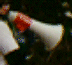
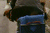
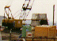
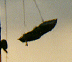

My Home Page
My Home Page
On March 31, 1995 a group of brave cyclists pedaled down a busy road during rush hour. The point of this display of bravado or stupidity (you decide) was to protest the closure of the bike route along John Nolen Drive in Madison, Wisconsin. For all the details on why the city has chosen to do nothing to help cyclists travel this corridor while spending millions to insure that motorist can continue to do so. Below are a few snap shots taken by Lisa Goodman before and during the ride. Click on the small picture to see a full-sized snap shot.



